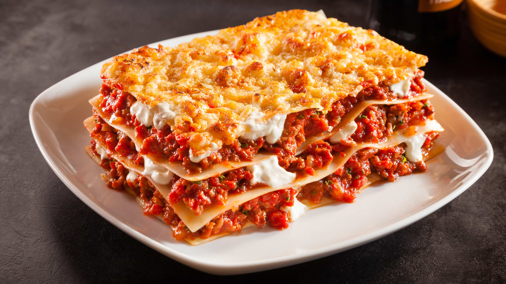

Lasagna

Description
Lasagna is a classic Italian pasta dish made by baking layers of pasta sheets,
sauce, cheese, and other fillings in a casserole dish. While its exact origin
is debated, it has been a staple of Italian cuisine since the Middle Ages.
A homemade lasagna typically involves a meat sauce, a cheesy ricotta filling,
and the signature layering.
Ingredients
- 1 tbsp olive oil
- 1 lb ground beef
- 1 lb spicy Italian sausage, casings removed
- 1 medium onion, chopped
- 3 cloves garlic, minced
- 2 (15 oz) cans tomato sauce2
- 1 (15 oz) can water
- 1 (12 oz) can tomato paste
- 1 tsp each of dried oregano, basil, and salt, plus 1 tsp black pepper
- 1 box lasagna pasta
- 16 oz ricotta cheese
- ½ cup grated Parmesan cheese
- 24 oz shredded mozzarella cheese
Steps
-
Prepare the sauce: Sauté the onion and garlic in olive oil. Add the ground beef
and sausage and cook until browned. Drain the fat. Return the meat to the pan
and stir in the tomato sauce, water, tomato paste, and seasonings. Simmer for 20-25 minutes.
-
Cook the pasta: Boil the lasagna noodles until al dente, according to package directions.
-
Assemble the layers: In a 14x11-inch baking dish, spread a thin layer of meat sauce on the
bottom. Add a layer of noodles, followed by half of the ricotta cheese, one-third of the
meat sauce, half of the Parmesan, and one-third of the mozzarella. Repeat the layers.
-
Finish layering: Add a final layer of noodles and top with the remaining meat sauce and
mozzarella cheese.
-
Bake: Cover with foil and bake at 350°F for 50-60 minutes. Remove the foil and bake for
another 10 minutes until the cheese is bubbly and browned. Let it rest for 10 minutes
before serving.
Home